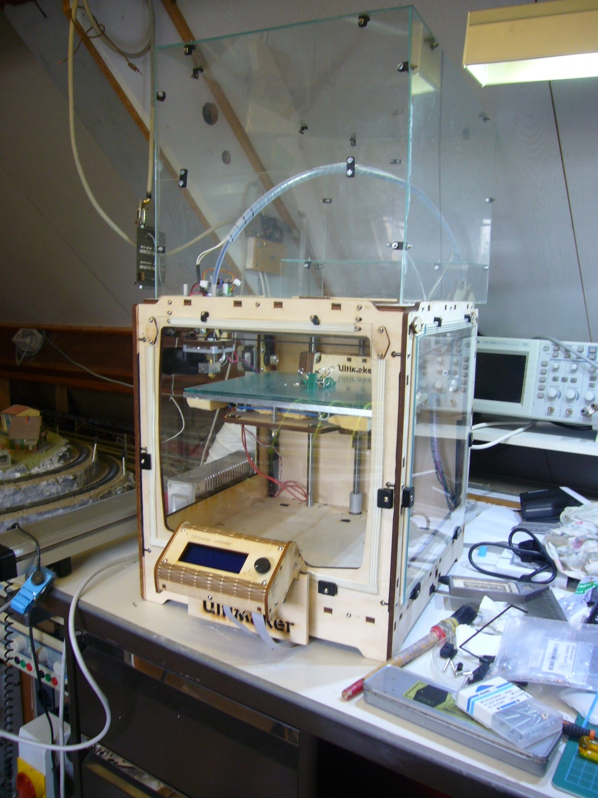

Heated chamber
Additionally for ABS printing I added a heated build chamber. The heated bed will be used to heat the chamber. I made
it out of some old plexiglass that I had laying arround. It is 2mm stuff so quite flexable but that is what I had in
stock. I printed some holders for the front and side panels and made a box for the top. It gets to about 40 degrees in
the top and it keeps the draft out.

I also move the x and y motors to the outside. This was a easy modification since you only had to unscrew the motors remove
the spaces and use a different length bold. The pully will stick to the inside and the axel on the motor is just long enough to
do so. Now have to make sure that you change the direction of the motors. This can be done by pushing out the pins in the connector
and reverse the order of the 2 pairs of wires (2 by 2). Don't change the order of 1 pair just exchange black/green with the red/blue
wire pair. I glued some heatsinks on the motors since to my opinion they get quite hot.
Attaching the ulticontroller was fun. Since I had my problem with the front plate I still had that plate laying arround. So I cut out the
section where the ulticontoller fits and put some wood inbetween and now the ulticontoller fits to the front again touching the 'glass'